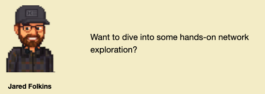
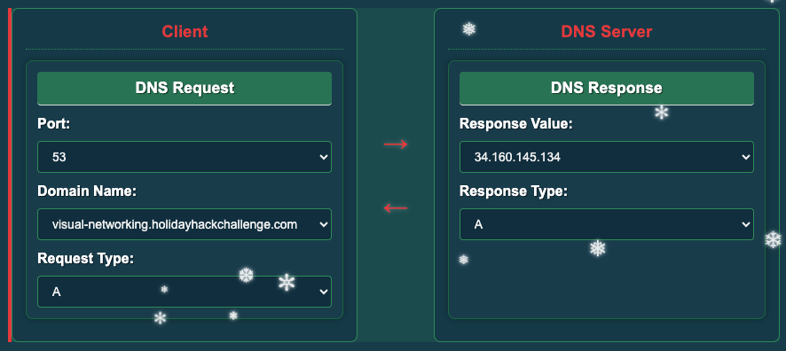
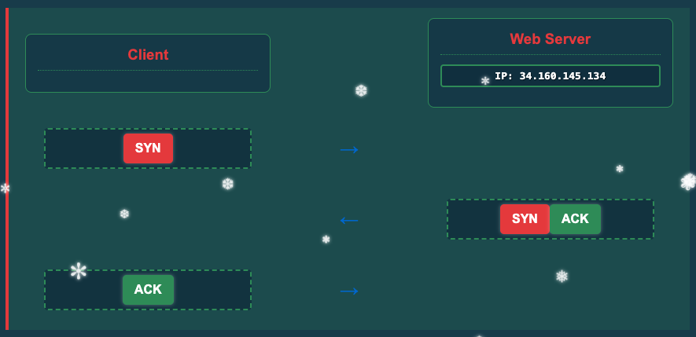
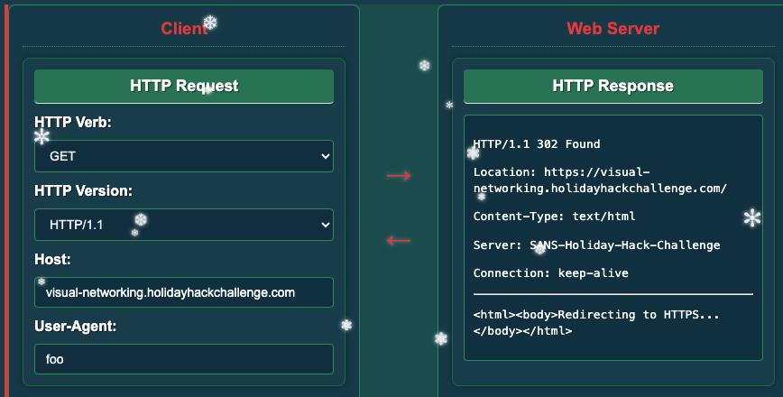
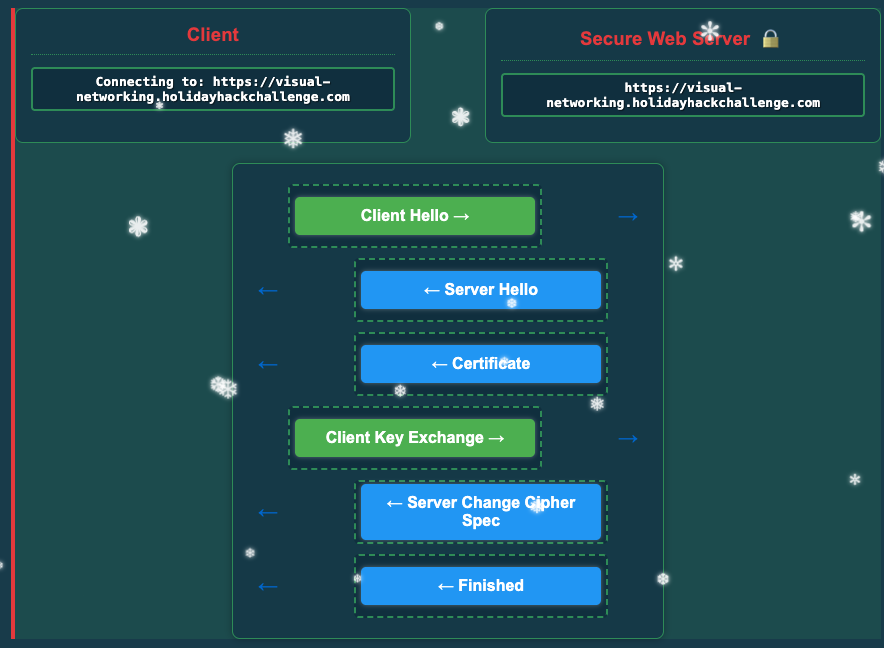
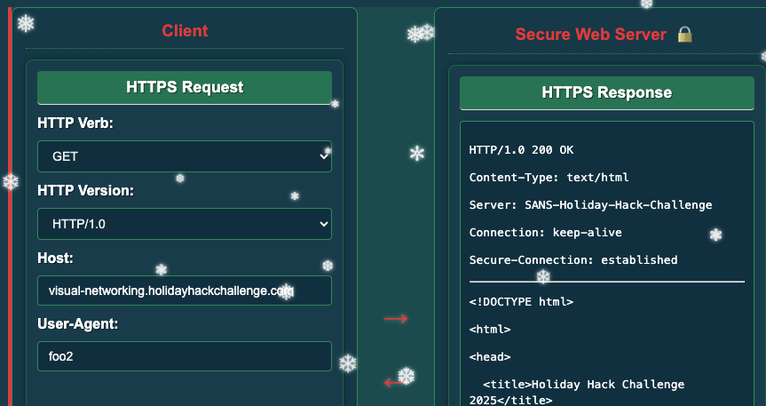

Visual Networking Thinger

Step onto the ice with Jared to visualize the invisible flow of data across the internet. We break down the fundamental handshakes that keep the digital world spinning by manually constructing packet flows.
Challenge Overview
Jared is waiting by the hockey rink to teach us the ropes of network traffic analysis through an interactive visualization. He tasks us with manually constructing valid packet flows for DNS, TCP, HTTP, and TLS to prove we understand the underlying protocols. It is a foundational exercise in understanding how machines establish trust and transfer data.
Level 1: DNS Lookup
Concept: The Domain Name System (DNS) is the phonebook of the internet. Before we can talk to a server, we need to translate its human-readable domain name into a machine-readable IP address.
Client Request:
- Port: 53 (Standard DNS port)
- Query: visual-networking.holidayhackchallenge.com (domain name)
- Type: A (IPv4 Address record)
Server Response:
- Value: 34.160.145.134
- Type: A

Side Note: Other DNS Record Types
- AAAA: Maps a hostname to a 128-bit IPv6 address.
- TXT: Arbitrary text records often used for domain verification (like SPF or google-site-verification).
- MX: Mail Exchange records that direct email to the correct mail servers.
Level 2: TCP 3-Way Handshake
Concept: Transmission Control Protocol (TCP) ensures reliable communication. Before sending data, the client and server must agree to talk. This process is known as the 3-way handshake.
- Client: Sends SYN (Synchronize) to initiate the connection.
- Server: Responds with SYN-ACK (Synchronize and Acknowledge).
- Client: Sends ACK (Acknowledge) to confirm the connection is established.

Additional TCP Flags
- URG (Urgent): Indicates that the data contained is urgent and should be prioritized.
- PSH (Push): Tells the receiving application to push data immediately rather than buffering it.
- RST (Reset): Abruptly resets the connection, usually indicating an error or refusal.
- FIN (Finish): Used to gracefully close a connection when there is no more data to send.
Level 3: HTTP GET Request
Concept: Hypertext Transfer Protocol (HTTP) is the application layer protocol used for transmitting hypermedia documents like HTML. Now that we have a TCP connection, we request the actual web page.
- Verb: GET (We want to retrieve data)
- Version: Any will work
- User-Agent: Anything (including blank) works

Additional HTTP Methods
- POST: Used to submit data to be processed to a specified resource.
- PUT: Replaces all current representations of the target resource with the uploaded content.
- DELETE: Removes the specified resource.
- OPTIONS: Describes the communication options for the target resource.
- HEAD: Same as GET but only retrieves the headers, not the body.
HTTP Versions
- HTTP/1.0: The original version, which is now mostly obsolete.
- HTTP/1.1: Introduced persistent connections and chunked transfer encoding.
- HTTP/2: Improved performance with multiplexing and header compression.
- HTTP/3: Uses QUIC protocol for faster and more secure connections.
Level 4: TLS Handshake
Concept: Transport Layer Security (TLS) encrypts the communication to prevent eavesdropping. This handshake occurs after the TCP connection but before HTTP data is sent.
- Client Hello: The client initiates the handshake and sends a list of supported cipher suites and a random number.
- Server Hello: The server selects a cipher suite from the client's list and sends its own random number.
- Server Cert: The server sends its digital certificate to prove its identity to the client.
- Client Key Exchange: The client sends a secret key encrypted with the server's public key (found in the cert).
- Server Change Cipher Spec: The server signals that all subsequent messages will be encrypted using the agreed-upon keys.
- Finished: The handshake is complete and secure communication begins.

Level 5: HTTPS GET
Concept: HTTPS is simply HTTP traffic encapsulated inside the encrypted TLS tunnel we just built. To the user, this looks identical to a standard HTTP request, but it is unreadable to anyone sniffing the network.
- Verb: GET (We want to retrieve data)
- Version: Any will work
- User-Agent: Anything (including blank) works

Challenge Reference Material
Challenge Descriptions
Classic Mode Description
Skate over to Jared at the frozen pond for some network magic and learn the ropes by the hockey rink.
CTF Mode Description
Santa's got the right idea about giving, and I'm excited to give you a fantastic way to learn networking fundamentals! This interactive visualization I've created shows you exactly how packets travel, how protocols work, and why networks behave the way they do. It's way better than staring at boring textbooks - you can actually see what's happening! Want to dive into some hands-on network exploration?
Official Hints
- This terminal has built-in hints!